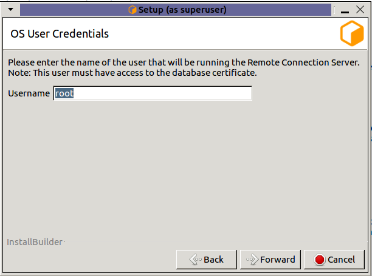

Migrating from Direct Connection to Remote Connection type¶
Remote Connection is our recommended connection type as it includes more features and provides better separation between the Deadline Database, Repository and Client machines. Direct Connection is not recommended (see here for more info) . To migrate from Direct Connection to Remote Connection, it is required to install Remote Connection Server (RCS) on at least one of your machines.
Installing Remote Connection Server¶
The Remote Connection Server (RCS) is an application that allows other Deadline components (such as the Deadline Worker, Deadline Monitor, etc.) to communicate with a Deadline Repository. RCS installation must be explicitly selected at the installation type selection screen.

If you have selected the option to configure the current machine as a Remote Connection Server, you will be prompted with configuration screens for the Remote Connection Server.
Note
These configuration screens only come up once the regular configuration screens have been filled out. They do not appear immediately after the Component Selection screen.

If Secrets Management is enabled in the database you will be presented with the option to assign a server role and grant master key access to the machine that is running the installer. (Windows and Linux only)
Username: Name of the OS user who will be running the Remote Connection Server. Secrets Management Identities are created for a specific OS User and machine. This field specifies which OS User to create the server identity for. (Linux only, on windows the OS user who is running the installer will be used.)

Admin Username: The username of the Secrets Management Administrator that you entered during the repository installation.
Password: The password of the Secrets Management Administrator that you entered during the repository installation.
Name of the current master key: Name of the Secrets Management master key. The default master key name is “defaultKey”. Use the default name, unless you have manually changed it using GenerateNewMasterKey.
Note
In order for the Secrets Management configuration to be succesful, you must enable TLS in the next section.
Note
If you are installing on macOS and wish to configure Secrets Management, run the ConfigureServerMachine after the installation.

The first page consists of a few different settings:
User/Group running the RCS: This is the user (or user group) that will be expected to run the Connection Server process. This value will dictate the initial permissions on files needed by the Connection Server, and the user listed on the HTTP.SYS URL Reservation (Windows only).
Unsecured port for Deadline Clients: This is the port on which the Server will listen for incoming HTTP requests. On Windows, this will also be the port listed on the HTTP.SYS URL Reservation created by the installer.
- Require external Clients to use TLS: If enabled, the Remote Connection Server will serve remote clients exclusively over an encrypted connection. It will require clients to provide a valid x509 certificate when connecting.
Secured Port: If TLS is enabled, remote clients will need to connect to this TLS port (and not the unsecured HTTP port).
Launch RCS when Launcher starts
Launcher restarts RCS whenever RCS stops running, for example when it crashes or you close it. The restart will only happen if Launcher is running.
Warning
HTTP-only configurations should only be used internally within a closed network, and should not be exposed to the internet.
If TLS was enabled, this next page allows for configuration of the x509 certificates that the Connection Server will use to serve clients over TLS.
Generate New Certificates: Select this option if you do not have a set of certificates to use.
- Use Existing Certificates: Select this option if you’ve already generated a set of certificates to use (either externally or previously through the installer).
Server Certificate: The path to a Server x509 certificate, in PKCS#12 (*.pfx, *.p12) format. This must include the private key alongside the certificate.
CA Certificate: The path to a trusted root CA that should be used to validate incoming client certificates.
This page is the final page for configuring the Connection Server, and only appears if ‘Generate New Certificates’ was selected in the previous step. It contains settings related to generating the CA, server, and client certificates.
Output Directory: This is the directory in which the set of generated certificates will be placed.
Client Certificate Password: You may specify a password that will be used to encrypt the Client certificate and key. If specified, it will need to be provided by clients connecting using this certificate. If you do not wish to set a password, leave this field blank.
Note
Once the certificates have been generated, the ‘Deadline10RemoteClient.pfx’ file should be securely moved to client machines that are expected to connect to this Connection Server; it will be needed at connection time. In addition, the user(s) running the client processes will need to be granted Read access to the file (the installer creates the file with restrictive permissions).
Warning
It is important to be aware of who might have access to the file throughout the process of distributing it to the client machines – the operating system might change the access level of the file to be overly broad on a copy, for example. We recommend always maintaining each certificate with the minimal subset of permissions for the users that need to connect to the Deadline Repository.
Changing connection type in all machines:¶
After a successful connection to the Deadline Repository from the RCS, you can change the connection type by following the instructions at Changing Repository.
Note
You can also try updating the connection type for one of the clients and then share the updated client config file with other machines.

{kind=link}
{kind=link}
{kind=link}